Ocean diagnostics for ORCA025.L75 experiment "HN71"
Forced with CORE2 CNYF
Info: NEMO 3.6 + LIM 3 (as in EC-Earth 3.2.2)
Simulation mastermind(s): SMHI / Uwe
Last updated: 2017-05-11 at 18:21:27
Created on 'TRIOLITH.nsc.liu.se'
Jump directly to time series for:
- Atlantic Meridional Overturning Circulation
- Temperature (global + regional)
- Salinity (global + regional)
- Surface Heat flux
- Surface Freshwater flux
- Evolution of Arctic/Antarctic sea-ice concentration
- Transport of volume, freshwater, and heat through sections
- Mixed-Layer Depth in different regions
- Transport by sigma class at overflow sills
- Meridional transports
Diags from climatology (2040-2049)
Evolution of SST and SSS biases (w.r.t observations) and MLD
Atlantic Meridional Overturning Circulation
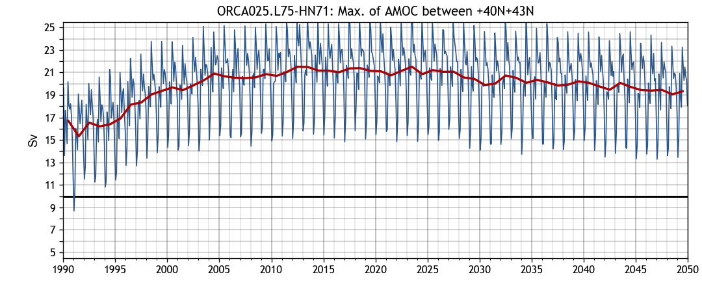
→ back to top
Temperature (global + regional)
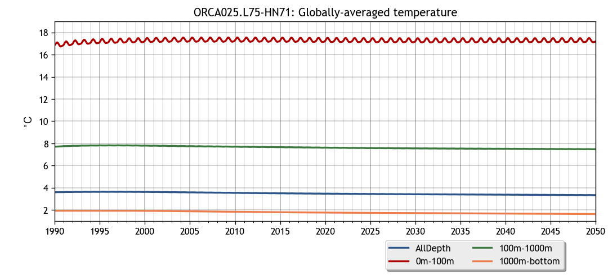
Time-depth evolution of temperature
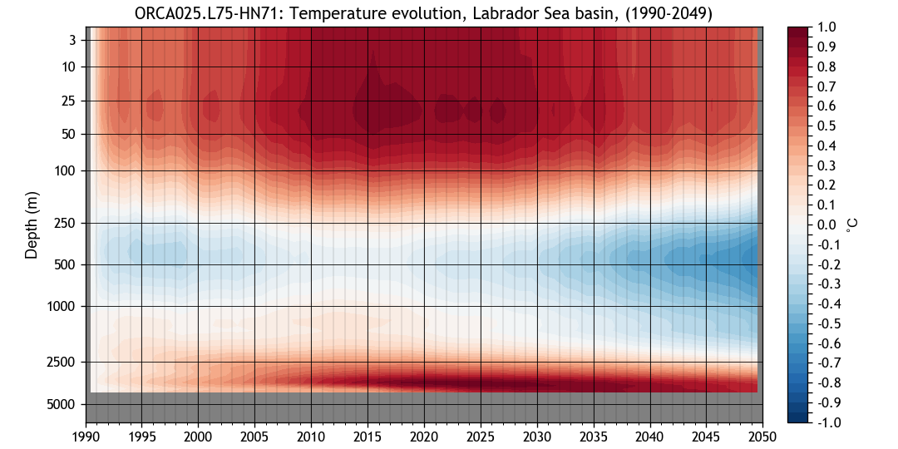
→ back to top
Salinity (global + regional)
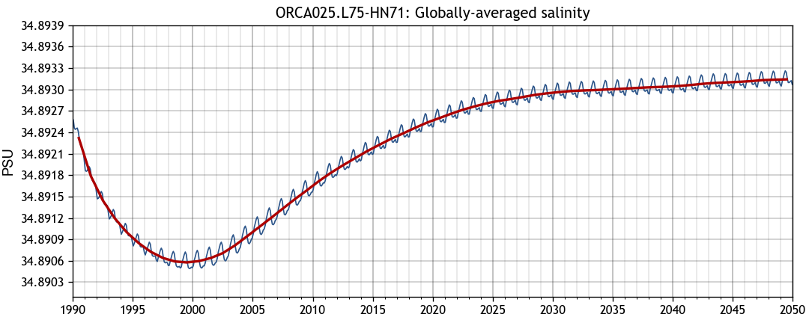
Time-depth evolution of salinity


→ back to top
Surface Heat flux
→ back to top
Surface Freshwater flux

→ back to top
Evolution of Arctic/Antarctic sea-ice concentration

→ back to top
Transport of volume, freshwater, and heat through sections
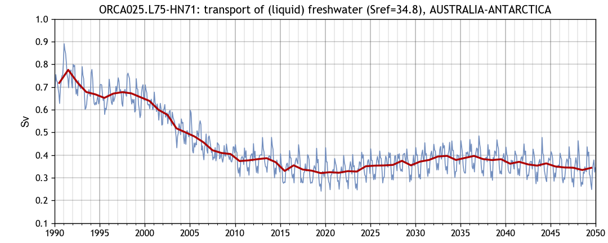
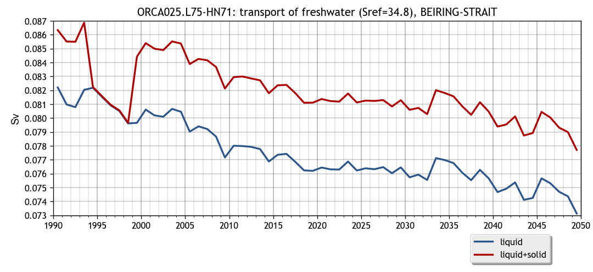
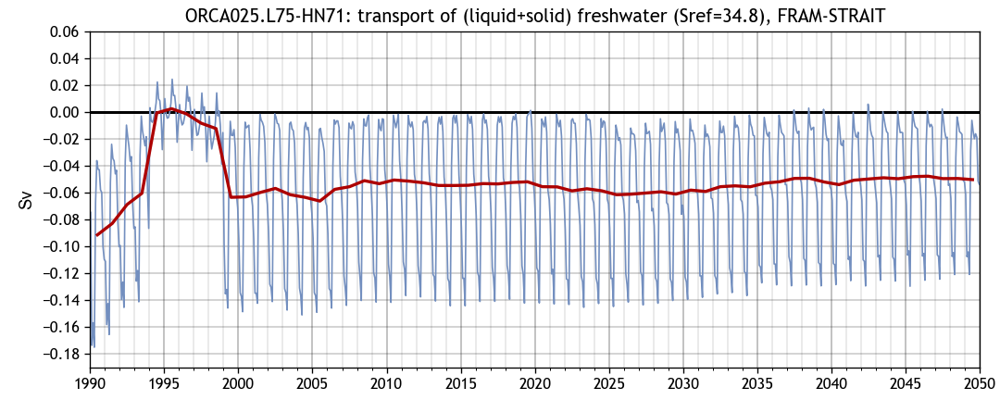
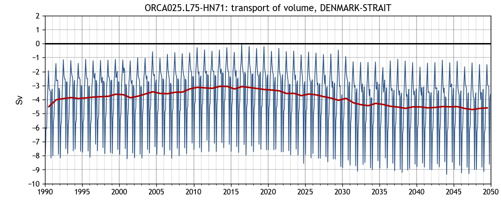
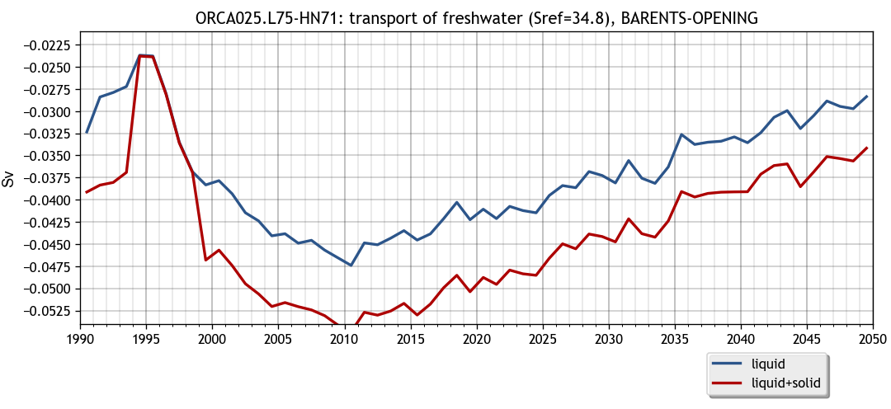
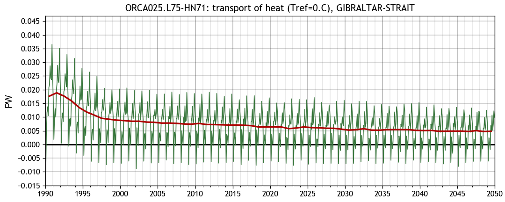
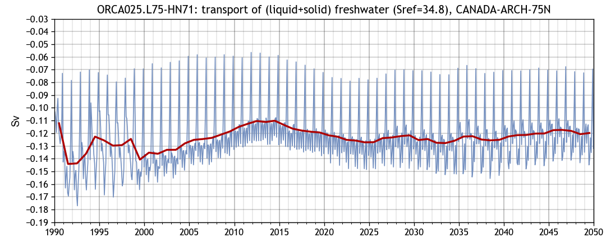
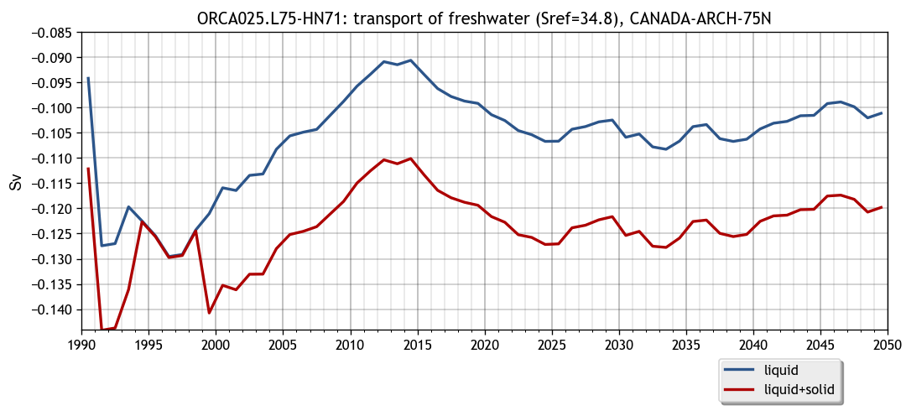
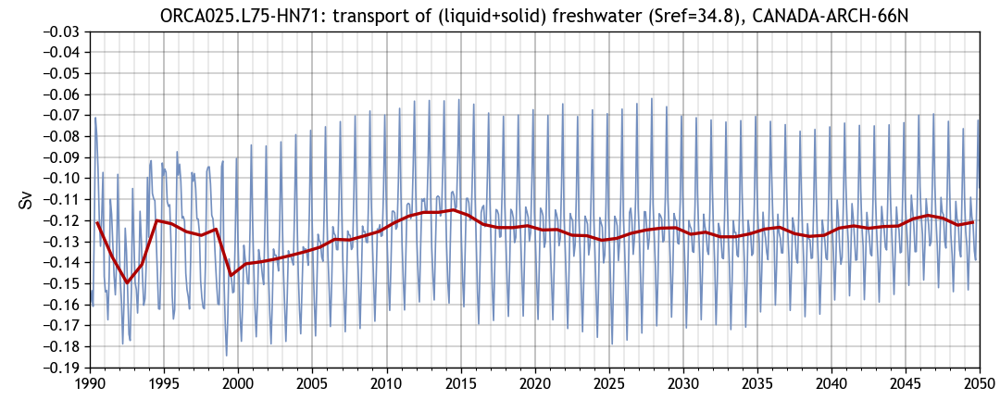
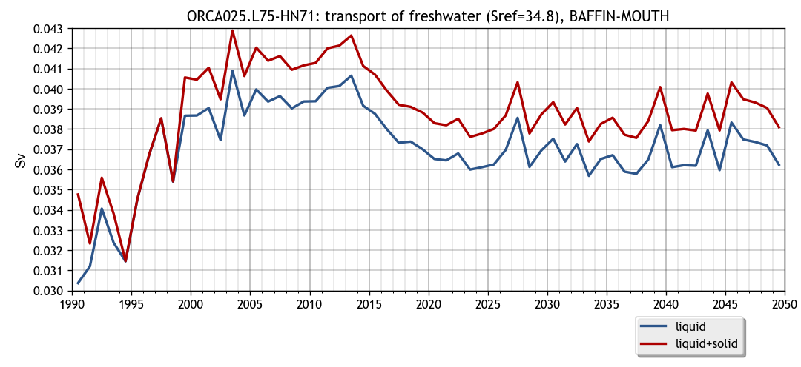
→ back to top
Mixed-Layer Depth in different regions

→ back to top
Transport by sigma class at overflow sills
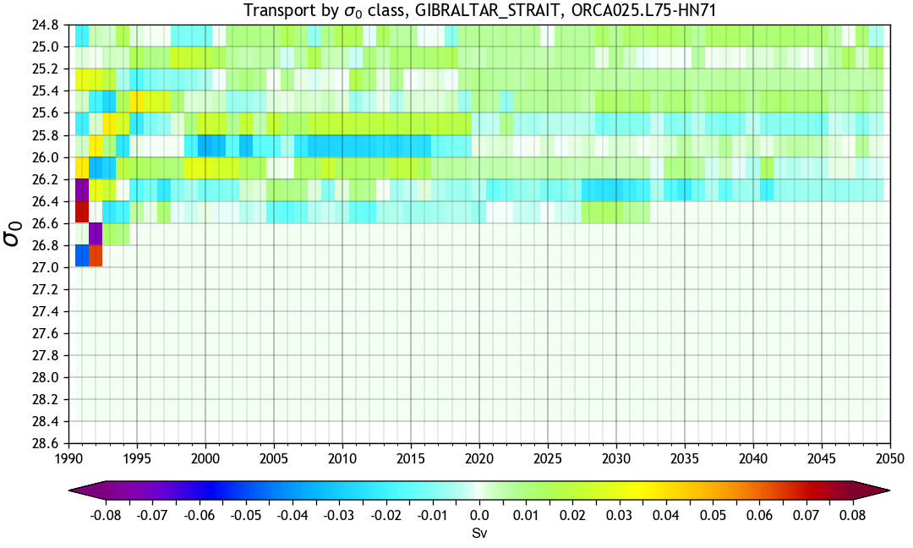
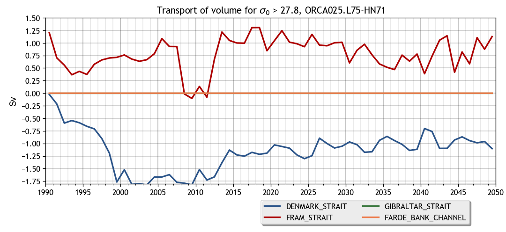
→ back to top
Meridional transports
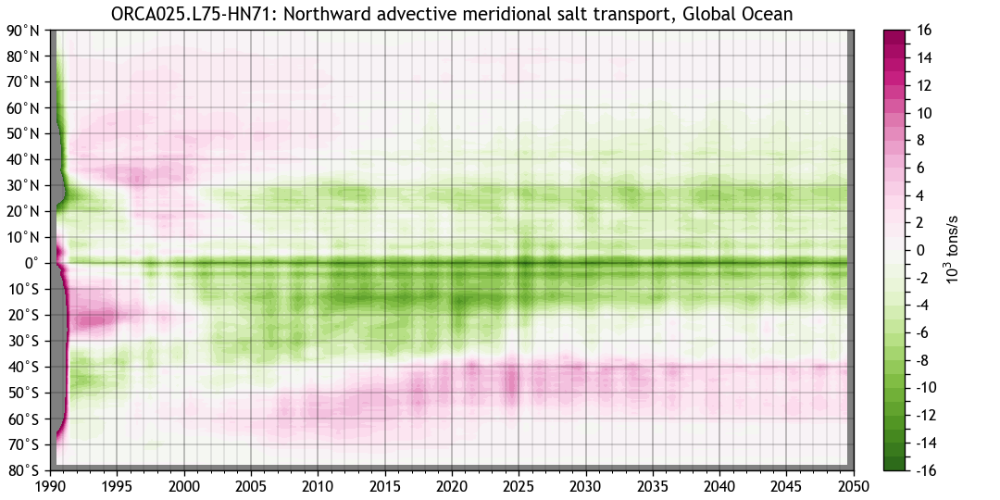
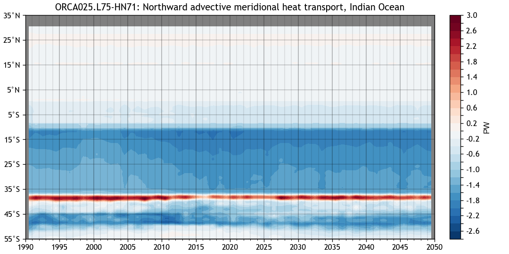
→ back to top
Page and diagnostics created with BaraKuda...